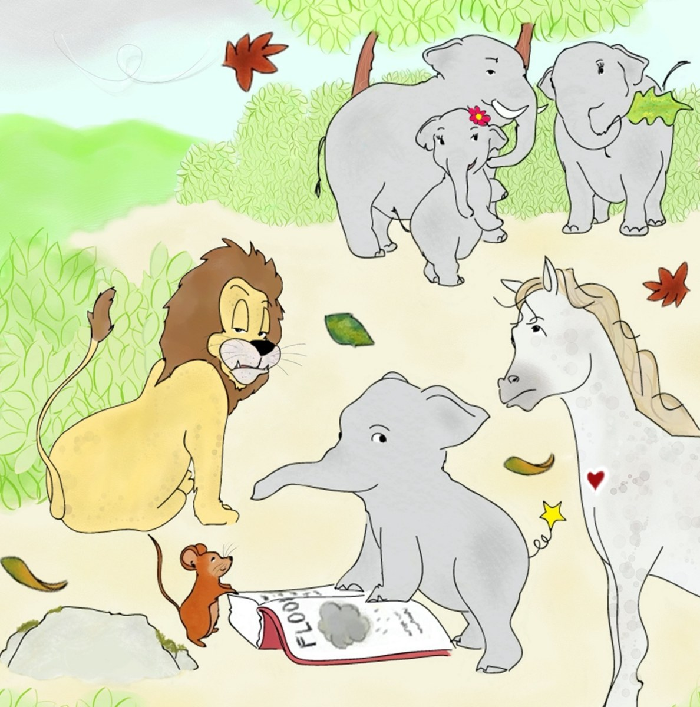
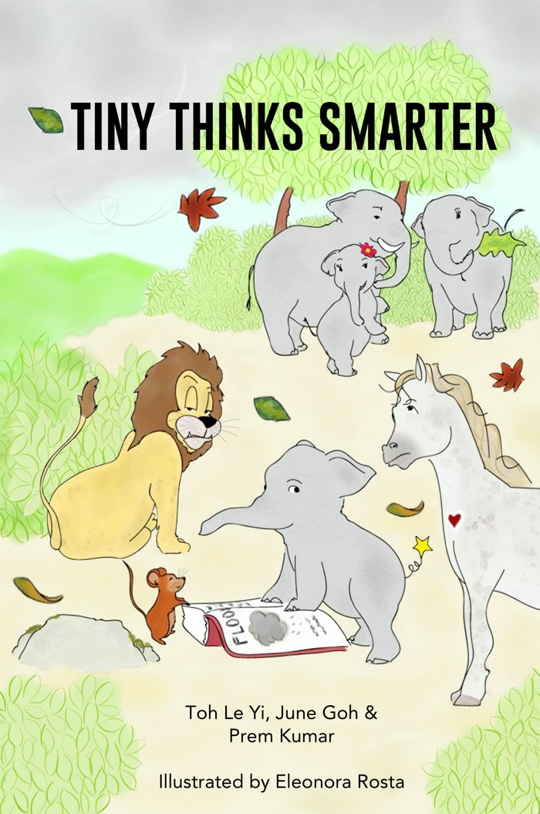

Resilience and well-being
Understanding what pressure means to them, and what they can do about it, rather than simply being told to worry less.
To thrive, students need to make sense of situations, examine their beliefs and make sound choices. Through the story of Tiny, a young elephant who keeps his family safe from the floods, we help learners from primary school to tertiary build these habits.

Watch it with students, parents or teachers, then ask: what does it mean to reach your potential, and where could one small change make the biggest difference? We adapt the story and the questions for each age group.
During my formative years at school, I received a certificate of commendation. It wasn’t for top marks. It was for three years of playing the trombone in the school band.
The trombone rarely carries the melody. Most of the time, its job is to hold the harmony so that others can shine. The band taught me something I have spent my working life coming back to: no one player makes the music. You listen to the people around you, keep time with them and adjust when something drifts. When one section rushes ahead, the whole piece suffers, however well each person plays on their own.
Tiny’s story makes the same point. His family survived not because the strongest ran fastest, but because they noticed the pattern early and moved together.
Reaching your potential is rarely only about being the best on your own. It is also about seeing how you fit into something bigger, and where your small part can make the biggest difference.
Thinking Smarter is not another subject to fit in. It gives students a way of thinking that strengthens the work schools are already doing.
Understanding what pressure means to them, and what they can do about it, rather than simply being told to worry less.
Seeing how their choices affect others, in school, at home and in the community.
Choosing pathways and careers by noticing their own interests and patterns, not only what looks best on paper.
Moving from knowing what is right to doing it, by practising judgment in real situations.
Through Tiny's story, students practise thinking skills they can use in any subject and in everyday life.
These are the four practices of the Thinking Smarter Model, which we also use with organisations, from primary school to the boardroom.
Like Mighty the mouse, keep track of what happens over time to see what keeps repeating. A single event can mislead; a pattern over weeks or months reveals more. Noticing early leaves time to act before a problem grows, just as Mighty’s records showed that the rain came on a Thursday.
First the wind, then the rain, then the flood. Trace what leads to what, and look for loops where one thing feeds another. A fix in one place can create a problem somewhere else, so ask “and then what?” before acting. Seeing the connections shows where one small change can make the biggest difference.
Like Tiny, ask the questions no one else is asking. Speaking up can feel risky, so weigh the trade-offs and choose how and when to ask. For those who lead, research links teams where people feel safe to ask with more learning and innovation. When questions go unasked, problems can stay hidden and new ideas may be lost. When people do ask, they can find better ways forward and create sustainable outcomes, as Tiny did for his family.
Try an idea out, even when others doubt it, and stay open to changing course when the evidence shows something new. Start small, so a test is safe to try and easy to learn from. A belief that once made sense, like “survival of the fittest”, can hold a group back long after conditions change. Tiny proved his idea before others believed him.
Short videos for young people about loops many of them know. The questions point to the pattern, not the person: it is not about who you are, but the loop you are in. Each shows a simple reinforcing loop, where each step feeds the next, and one small change that could break it. Each ends by showing how the same loop can work the other way, as a positive loop. Real life has many more knock-on effects, and the same kind of loop shows up in studying, friendships, sport and work. The third short touches on how students feel about results; if a student is struggling, encourage them to talk to someone they trust.
Try asking students: where else do you notice a loop like this? What small change could make the biggest difference?
After the AI short, ask: how would you check an answer that AI gives you? Could you explain it to a friend with the laptop closed? In group work, does everyone understand the whole project, or only the person, or the AI, that did each part? And why might this matter to employers later on?

Toh Le Yi, June Goh and Prem Kumar · illustrated by Eleonora Rosta
A baby elephant named Tiny saves his family from danger. Follow him as he searches for answers and confronts the deeply held beliefs of his tribe.
And the question the book leaves open: what do you think happened to Arthur the lion?
Meet the people behind the book on our Our People page.
Every session is shaped around your students' age and your school's goals. Tell us what you need and we will propose an approach.
Story-based sessions with Tiny that build the practices of noticing, asking why and trying out ideas.
Workshops on making sense of pressure, choices and the beliefs behind them, using the story as a starting point.
Making decisions about pathways and careers, and working through complex problems in projects and teams.
Practical Thinking Smarter tools that teachers can bring into lessons across subjects, and into how the school works.
Talks on the beliefs we pass on to our children, about stress, success and money, and how to help them make sound choices.
A live, anonymous Team Health Check that lets a class or staff team see how it thinks together.
What children take from our expectations is not always what we meant. Try asking your child the same questions in return: what do they think you expect of them, and what do they notice at home that you might miss? Listening to their answers, without correcting them, is often where the most useful conversations begin.
Order books, or talk to us about a workshop or programme for your teachers or students.
globalsystemsthinking@gmail.com